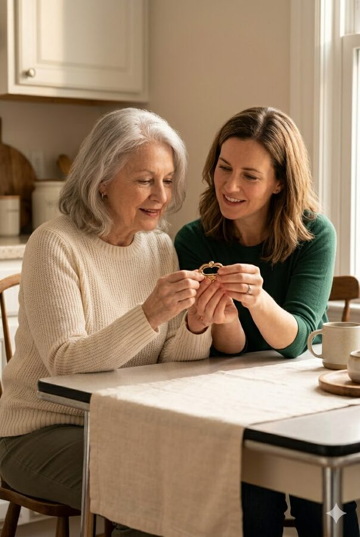
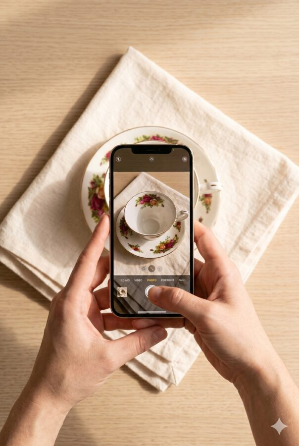
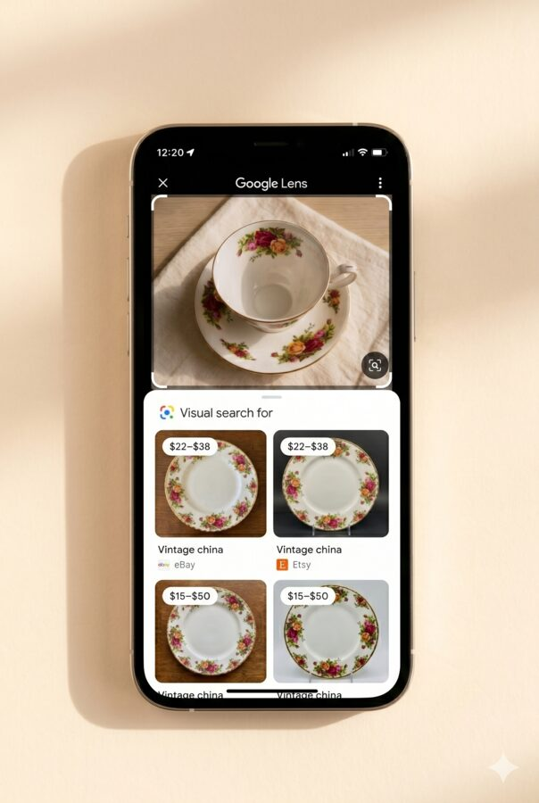
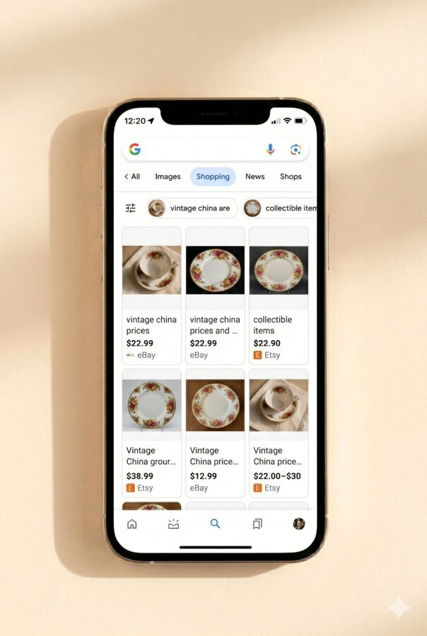
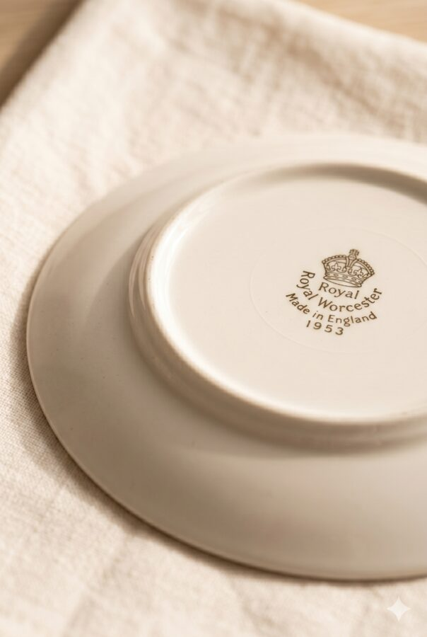
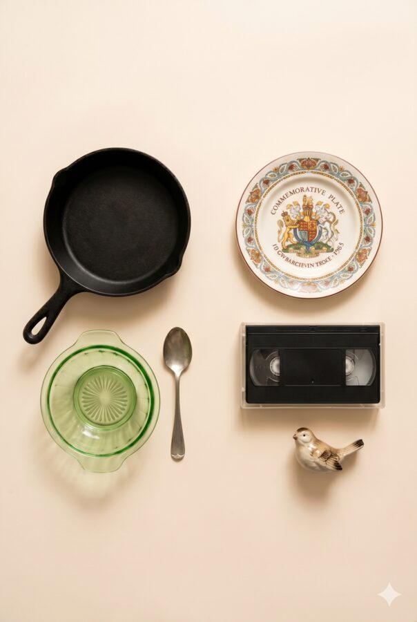

A Free Companion to the Downsizing Guide
When you are helping mom pack up a house she has lived in for thirty years, there is a moment where you pick something up and think: is this worth anything, or am I carefully wrapping a worthless bowl for the next hour?
Google can answer that in about 45 seconds, for free, without calling anyone. Most families give away far more value than they realize, so this little habit pays for itself the first afternoon you use it. Here is exactly how.

Open the Google app and find the small camera icon on the right side of the search bar. Tap it.
iPhone users: if you do not see the camera icon, download the free Google app from the App Store first.
Set the item on a plain white towel or countertop. Get close, and make sure the lighting is decent. If there is a brand name or logo anywhere on the piece, get that in the shot too.

Google shows what it thinks the item is, plus similar items for sale right now. Scroll through and look for price ranges. If it is showing up on eBay or Etsy, that is a good sign it has real value.

At the top of the results, tap Shopping. eBay sold listings tell you what an item actually sold for, not just what someone is asking. If it is listed on multiple platforms, there is real demand.

Flip the item over. Most china, pottery, and silverware carry a small mark stamped on the bottom. Photograph that too. If Google does not recognize it, type what you see and add the words "maker's mark."

Some categories surprise people in both directions. The grid below is the short version.

If something looks like it could be worth $200 or more, get a second opinion. A local antique dealer will usually look for free, eBay sold listings give you a reality check, and for jewelry or fine art, find a certified appraiser.
Depression glass, cast iron cookware, vintage Pyrex, sterling silver (look for a 925 stamp), mid-century furniture, and vintage advertising tins.
Commemorative plates, VHS tapes, encyclopedias, and most mass-produced figurines. Sentimental value is real value too, it just is not resale value.
What is still in the house when it goes on the market affects how buyers see it, what it photographs like, and what it sells for. Clearing things out thoughtfully, before listing rather than after, is one of the biggest things a family can do to protect the price. It is also exactly the kind of planning I help with.
If you are helping mom figure out this next season, the house, the options, the timing, start with the full downsizing guide. And when your family wants a real number for the home, or just a quiet conversation, I am easy to reach.
Read the downsizing guide → Call or text 801.420.2284Kelsie Jimenez · The Perry Group · Real Broker LLC
kelsie.jimenez@theperry.group
This guide is for general information only and is not an appraisal or financial advice. Item values vary with condition and market demand. Kelsie Jimenez · License #11407496-SA00 · The Perry Group at Real Broker LLC · 2168 W Grove Pkwy Suite 225, Pleasant Grove, UT 84062.